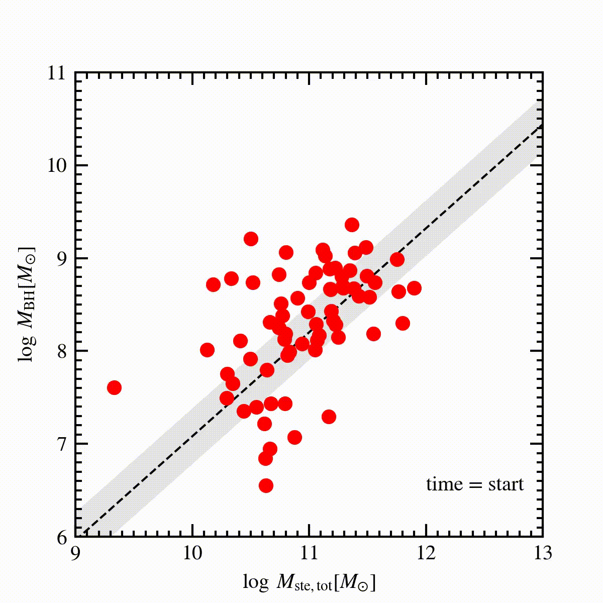

My favorite research areas are as follows.
1. AGN intrinsic twinkling
Active galactic nuclei (AGNs) have long been observed to “twinkle” (i.e., their brightness varies with time) on timescales from days to years. While such an observational fact have been established since the discovery of the first quasar, its physical nature remains unclear. It is widely accepted that AGNs (and their luminous counterparts, quasars) are powered by supermassive black hole (SMBH) accretion. The SMBH accretion disk is too compact (comparable to our solar system) to be spatially resolved by current or future facilities. The AGN twinkling can act as a unique probe of the SMBH accretion-disk spatial scales and related fundamental physics. Observationally speaking, on-going (e.g., ZTF) and future (e.g., WFST and LSST) large time-domain surveys will offer a tremendous amount of light curves for millions of AGNs. With an insightful physical model, one can test AGN central-engine models, obtain SMBH physical parameters (e.g., mass and mass growth rate), and probe the cosmic evolution of SMBHs.
We aim to offer a physical model to decipher the melody of AGN twinkling in various wavelengths (from X-ray to IR). We have made the first step by proposing the magnetic coupling between the hot corona and the underlying cold accretion disk (see the above plot); the magnetic fluctuations in the corona can propagate outwards and alter the magnetic field in the accretion disk surface, which eventually changes the energy dissipation of the MHD turbulence in the main body of the disk. Hence, we expect to observe coherent temperature fluctuations and black-body intensity variations in different accretion disk radii (for more details, please refer to Sun et al. 2020a). We demonstrate that this model can explain: the dependencies of AGN variability upon timescales, luminosity, black-hole mass, and wavelength ( Sun et al. 2020b). This model predicts that: the ratios of the inter-band time lags to the light travel time delays anti-correlate with luminosity and variability frequency. This prediction is confirmed by recent observations (e.g., Li, Sun et al. 2021; Cackett et al. 2021). We expect to test this model with more datasets. We also plan to extend this model to include X-ray observations.
2. SMBH-galaxy co-evolution
The most intriguing thing to me is the observational fact that the mass of an SMBH and the stellar mass of its host galaxy are tightly correlated (hereafter SMBH-galaxy co-evolution; for a review, see Kormendy & Ho 2013) albeit the two have vastly different spatial scales (AU versus kpc). The physical origin of such a correlation is still under debate. One possible scenario involves the AGN feedback, i.e., the energetic output of the SMBH accretion can significantly affect the physical state and evolution of its host (see below for a cartoon view; Image credit: astrotweeps).
To understand the origin of the SMBH-galaxy co-evolution, we utilize spectroscopic and photometric datasets from space and ground facilities to probe the ratio of the SMBH mass to the total stellar mass of its host at the cosmic noon (during which the SMBH has the strongest mass growth rate). We also predict the future evolution of these SMBHs and their hosts.
We also put effort on improving the SMBH/galaxy mass accuracy by exploring the broad emission-line variability (which probes the gas dynamics around supermassive black holes) and the dusty torus emission.
3. Stellar compact objects
We are also interested in hunting for hidden stellar compact objects, e.g., neutron stars and stellar black holes, in
binaries. We use the Doppler spectroscopy and time-domain surveys in various bands and gravitational signals to probe
their physical properties (e.g., mass). Such studies enable us to understand the stellar evolution history of our Galaxy,
the metal enrichment of AGNs, and the universal description of the gas MHD behaviors under strong gravity. Recently, we
find the nearest neutron star candidate in a binary. The historical distance between this neutron star candidate and
our Earth is as close as 50 parsec (about 160 light years; trust me, this is really a close distance in the Universe)!
See the animation below (the red and blue symbols are for our Solar system and the neutron star candidate, respectively).